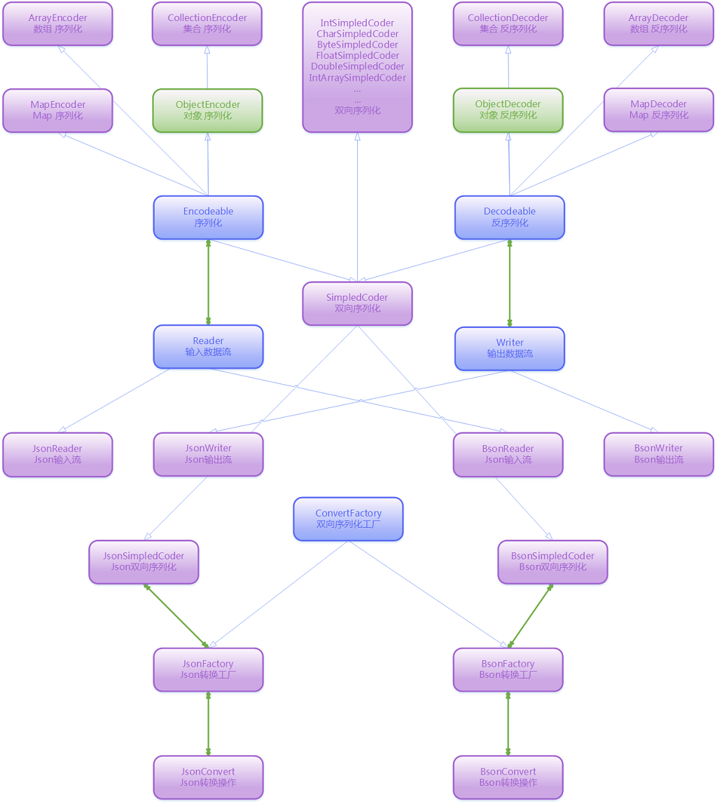
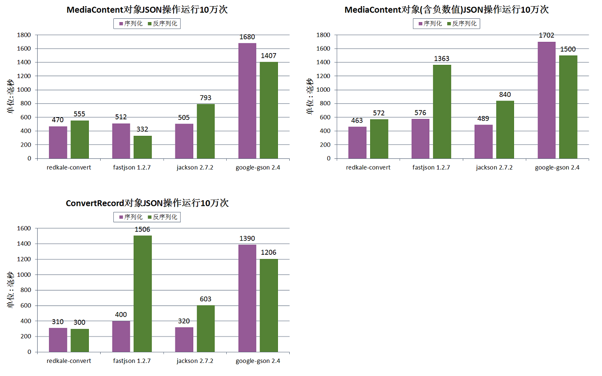

Redkale 技术详解 03 -- Convert高性能序列化
Convert是个重复造轮子的组件，却是个飞速的轮子。Redkale之所以重复造轮子主要追求性能和需要与网络数据的序列化很好的结合(Convert与ByteBuffer的结合)。 Convert在API设计思路上也与其他同类型的框架不一样，配置与序列化方法是分开的，大部分场景下配置项是固定的，因此不同的配置会动态生成对应的处理类以保证性能。
从包结构可以看出，Convert分三层：序列化与反序列化的抽象基础包；JSON包、Protobuf包。即使boolean、int、String这种基础数据类型都不是包含在Convert基础包中。以下是详细的结构图：

从上图可以看出，JSON与PROTOBUF是Convert基础包的实现，主要是实现Reader与Writer类。若需要实现XML格式的序列化，可以以JSON为参考自己编写。对于不是内置(ext子包下的数据类型)的且没有自定义处理(Encoder、Decoder)的数据类型, Convert会动态生成ObjectEncoder、ObjectDecoder对象。
Convert 的性能
一切不谈性能的框架都是在耍流氓！下面以JSON为例，与其他主流的JSON框架做个简单的性能比较(测试环境: DELL的普通笔记本)，fastjson一直号称是Java性能最好的JSON解析框架，其使用Benchmark是 https://github.com/eishay/jvm-serializers/wiki，Redkale根据该数据编写了MediaContent类。实例由MediaContent.createDefault()方法所得。

由上图第一份报告看出，以MediaContent对象进行比较，fastjson的反序列化性能是最好的，gson性能最差。redkale、fastjson、jackson在序列化方面差距不大。第二份报告的测试对象是将第一份的MediaContent对象中所有的数值改成负数进行测试的，可以看出fastjson对于负数的处理性能很差，只是比gson稍强。第三份报告的测试对象是ConvertRecord对象，该对象的特点是包含int[]、long[]、List、Map数据。从结果可以看出fastjson的反序列化性能最差。redkale与jackson一直保持高性能。
综合起来看，Redkale的Convert性能是最好的。数据相差50毫秒以下的差距基本可以忽略，因为每次测试的结果会上下波动几十毫秒。